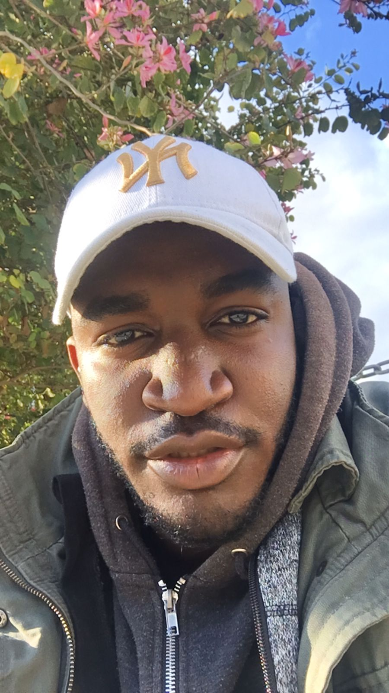

Udeme Ekom Willie

Summary
Simple is Best, I aim to be the Best
Education
- Bachelor of Sciences, Computer Science - European University (2014-2018)
- Diploma in Computer Hardware - IMFI College (2013-2014)
Work Experience
-
internal auditor -presken hotel & resort Nigeria
November 2023 - August 2024
- Ensuring that the hotel’s financial practices comply with relevant laws and regulations
- Reviewing financial records and documents to ensure accuracy
- Preparing financial reports for management
- Investigating financial discrepancies or irregularities and taking appropriate action
-
sales Assistant & CashIer - Pow the shop - mall of cyprus
December 2022 - April 2023
- Greets customers upon entering the store
- Assists customers in locating specific products and answers inquiries
- Replenishes products inventory
- Tracks and reports record of sales
-
Customer service & Cashier - Mailo's Pasta Project Nicosia,Cyprus
May 2022 - April 2023
- Attending to and dealing with customer at a rapid pace
- Managing transactions with customers using the cash register and POS
- Organizing and maintaining the store with supervised orders
-
System Administration / Customer service & Cashier - Battlenet Internet Cafe Nicosia, Cyprus
September 2021 - July 2022
- Handling Customer's care and providing information
- Maintaining system operations and updating softwares
- Organizing and cleaning working Environment
-
Biergarten Resturant, Nicosia, Cyprus
Head Chef
April 2020 - September 2021
Assistant Chef / Kitchen Assistant
September 2019 - April 2020
- Ensuring preparation of food are cooked and served according to resturant's menu
- Restocking materials and creating purchase order incase of low stocks
- Maintaining and organizing the kitchen Environment
Others